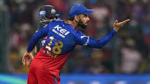

Who is the best cricketer
of all time ?
Lets know this fact, So first ignore favourite players and check stats and reality!
The Best Cricket Player is the one who plays for his team not for the name written on his back, the sign of best player is that he is the reason behind his team victory, not only by doing one thing such batting or bowling only, he should be active mind and play his role in all and every part of game. he not only try to help his team to get more runs but also trys to stops oppenet teams run by doing good in field and catching, he also suggets his teammates to what to do at every momement and he should be mastermind and genius. The question is who is the best player? The simple answer is the KING. Yes you get right the one and only king VIRAT KOHLI.
YES, KING KOHLI, Not only King he is also Genius, Absolutely Genius. In run-chase, of every format of game one person you need is the Chase Master KING KOHLI. His stats can easily prove it, most runs in winng case for India, most centuries in winnig case for India and most MOTM awards holder is KING KOHLI. He is man of his words, he is only cricketer who stayed at no 1 in all three formats at the same time. Most Centuries By King Kohli, Most runs by King Kohli, Most MOTM King Kohli, Most Famous Crickter King Kohli. King Kohli have 50+ avg in all three formats. And the reason for watching cricket for many people is King Kohli.

